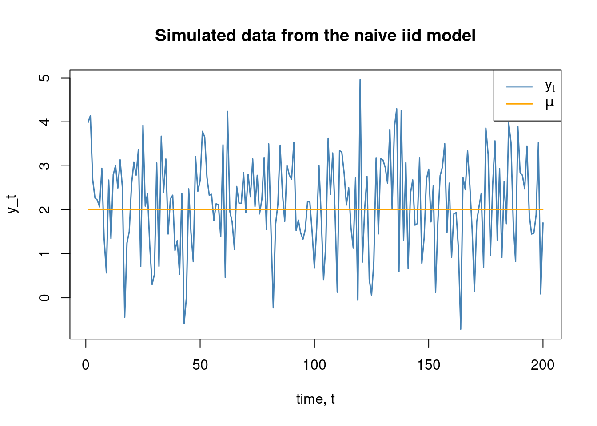
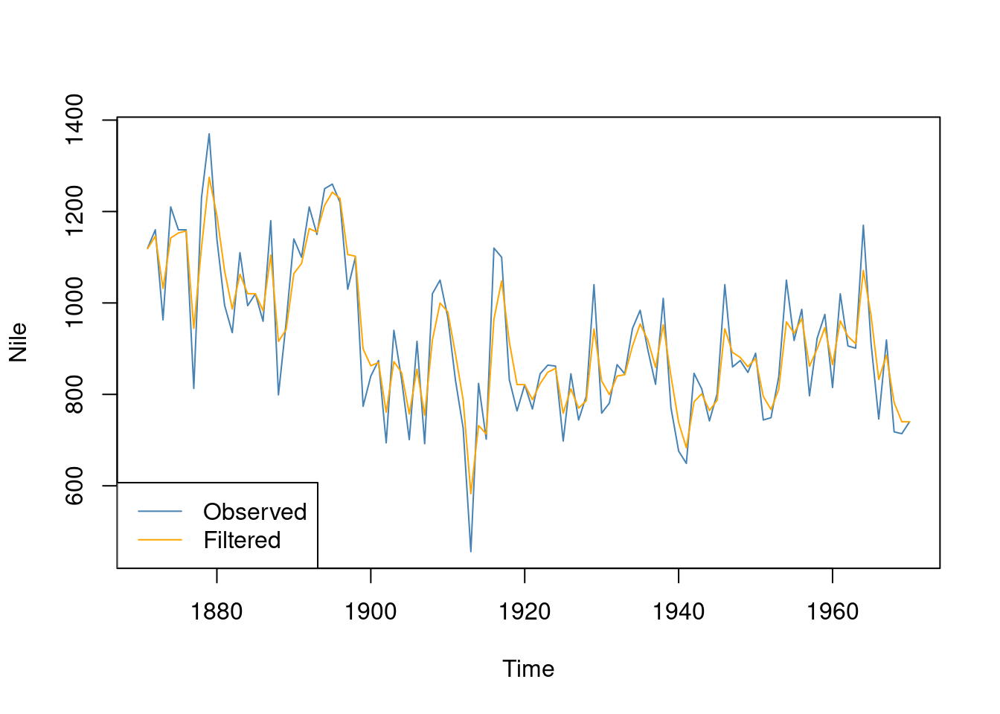
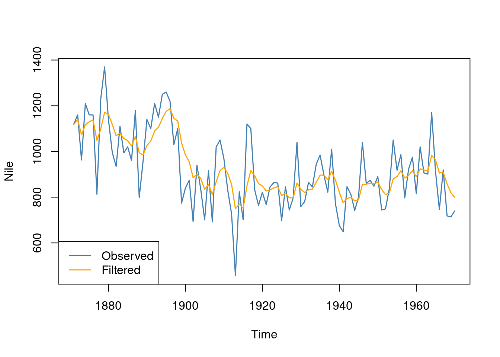
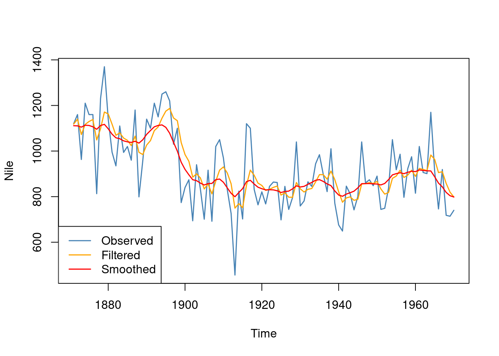
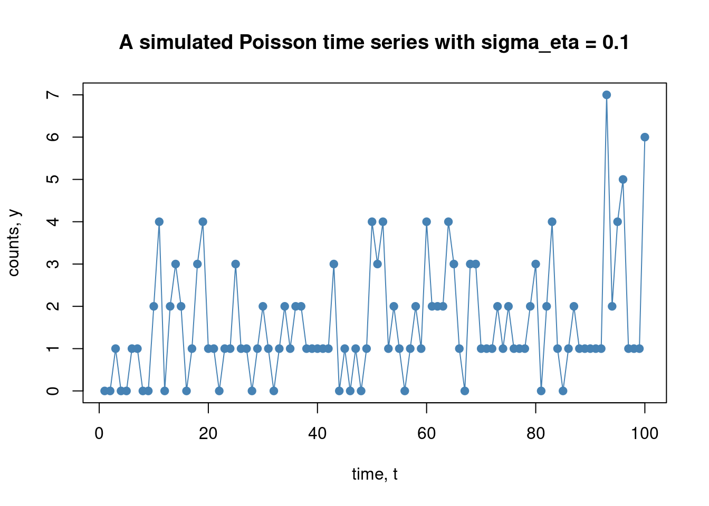
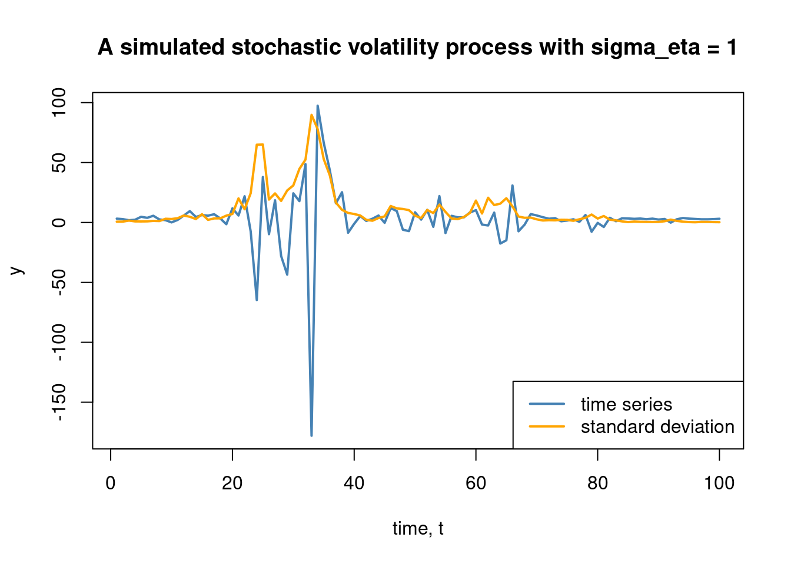
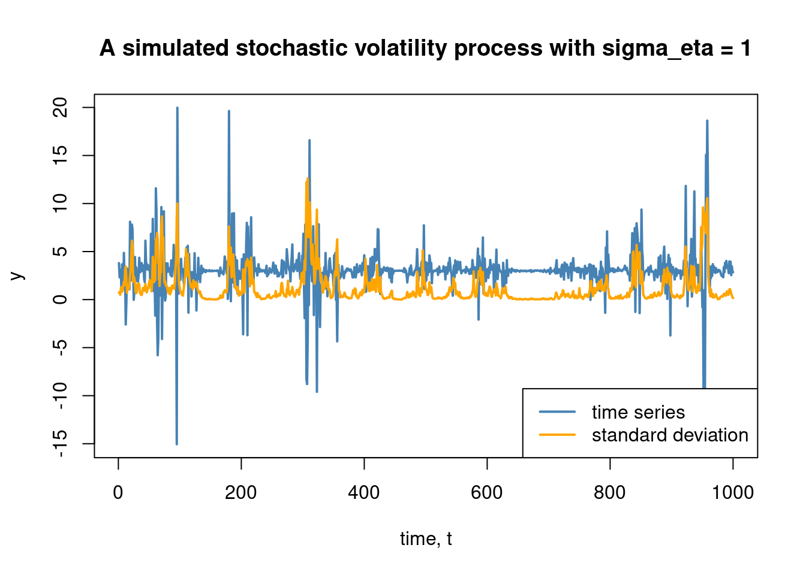
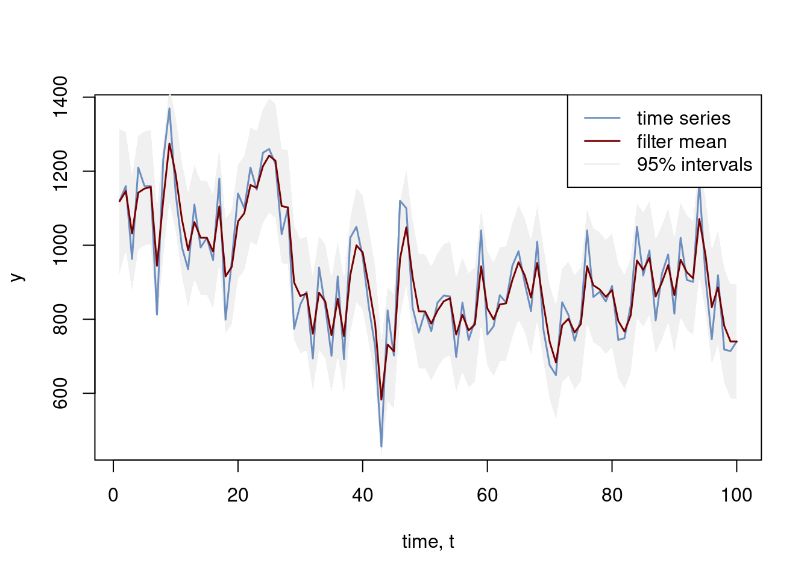

State-space models - filtering, smoothing and forecasting
Author
Mattias Villani
This tutorial gives a very brief introduction to state-space models, along with inference methods like Kalman filtering, smoothing and forecasting. The methods are illustrated using the R package dlm , exemplified with the local level model fitted to the well-known Nile river data. The tutorial is also sprinkled with some cool interactivity in Javascript.
Piecewise constant model
An extremely simple model for a time series is to treat the observations as independent normally distributed with the same mean \(\mu\) and variance \(\sigma_\varepsilon\)
#install.packages("latex2exp")library(latex2exp)n =200mu =2sigma_eps =1y =rnorm(n, mean = mu, sd = sigma_eps)plot(seq(1,n), y, type ="l", col ="steelblue", xlab ="time, t", ylab ="y_t", lwd =1.5,main ="Simulated data from the naive iid model")lines(seq(1,n), rep(mu,n), type ="l", col ="orange")legend("topright", legend =c(TeX("$y_t$"), TeX("$\\mu$")), lty =1, lwd =1.5, col =c("steelblue", "orange"))

This model is of course not something to write home about, it basically ignores the time series nature of the data. Let us start to make it a little more interesting by allowing the mean to vary of time. This means that we will have a time-varying parameter model where the mean \(\mu_t\) changes (abruptly) at certain time points \(t_1, t_2, \dots, t_K\):
Here is a widget that lets you simulate data from the piecewise constant model1.
Local level model
The piecewise constant model has a few abrupt changes in the mean, but what if the mean changes more gradually? The local level model has a constantly changing mean following a random walk model:
which models the observed time series \(y_t\) as a mean \(\mu_t\) plus a random measurement error or disturbance \(\varepsilon_t\). The mean \(\mu_t\) evolves over time as a random walk driven by innovations\(\eta_t\).
Here is a widget that simulates data from the model. Go ahead, experiment with the measurement/noise \(\sigma_\varepsilon\) and the standard deviation of the innovations to the mean process, \(\sigma_\eta\). For example, drive \(\sigma_\eta\) toward zero and note how the mean becomes close to constant over time.
Regression with time-varying parameters
The usual simple linear time series regression model is
where \(y_t\) is a time series response variable (for example electricity price) that is being explained by the explanatory variable \(x_t\) (for example temperature). This model assumes that the parameters \(\alpha\), \(\beta\) and \(\sigma_\varepsilon\) are constant in time, that the relationship between electricity price and temperature has remained the same throughout the whole observed time period.
It sometimes makes sense to let the parameters vary with time. Here is one such model, the time-varying regression model:
so that in every time period, the intercept changes by adding on an innovation \(\eta_t\) drawn from a normal distribution with standard deviation \(\sigma_\alpha\). This standard deviation therefore controls how much the intercept changes over time. The slope \(\beta\) changes over time in a similar fashion, with the speed of change determined by \(\sigma_\beta\).
Here is a widget that simulates data from the time-varying regression above. By moving the slider (show regline at time) you can plot the regression line \(\alpha_t + \beta_t x_t\) at any time period \(t\). The plot highlights (darker blue) data points that are closer in time to the time chosen by the slider. To the left you can see the whole time path of the simulated \(\alpha\) and \(\beta\) with the current parameters highlighted by dots.
State-space model - filtering, smoothing and forecasting
The state space model
All of the models above, and many, many, many more can be written as a so called state-space model. A state-space model for a univariate time series \(y_t\) with a state vector \(\boldsymbol{\theta}_t\) can be written as
\[
\begin{align}
y_t &= \boldsymbol{F} \boldsymbol{\theta}_t + v_t,\hspace{1.5cm} v_t \sim N(\boldsymbol{0},\boldsymbol{V}) \\
\boldsymbol{\theta}_t &= \boldsymbol{G} \boldsymbol{\theta}_{t-1} + \boldsymbol{w}_t, \qquad \boldsymbol{w}_t \sim N(\boldsymbol{0},\boldsymbol{W})
\end{align}
\] where we have written the multivariate distribution \(N(\boldsymbol{0},\boldsymbol{V})\) for \(v_t\), even though it is actually a scalar here, to be consistent with the notation used later.
For example, the local level model is a state-space model with a single scalar state variable \(\boldsymbol{\theta}_t = \mu_t\) and parameters
We learn about the state \(\mu_t\) from the observed time series \(y_t\) . The first equation is often called the observation or measurement model since it gives the connection between the unobserved state and the observed measurements. The measurements can also be a vector, but we will use a single measurement in this tutorial. The second equation is called the state transition model since it determines how the state evolves over time.
We can even let the state-space parameters \(\boldsymbol{F}, \boldsymbol{G}, \boldsymbol{V}, \boldsymbol{W}\) be different in every time period. This is in fact needed if we want to write the time-varying regression model in state-space form. Recall the time varying regression model
There are two different types of relevant inferences in state-space models: filtering and smoothing:
The filtered estimate \(\hat{\boldsymbol{\theta}}_{t|t}\) of the state \(\boldsymbol{\theta}_t\) uses data up to time\(t\).
The smoothed estimate \(\hat{\boldsymbol{\theta}}_{t|T}\) of the state \(\boldsymbol{\theta}_t\) uses data up to time\(T\), the end of the time series.
The filtered estimate is therefore the instantaneous estimate, giving the best estimate of the current state. The smoothed estimate is the retrospective estimate that looks back in time and gives us the best estimate using all the data.
Filtering means to compute the sequence of instantaneous estimates of the unobserved state at every time point \(t=1,2,\ldots,T\)
We will take a time series and compute the filtered estimates for the whole time series, but it is important to understand that filtering is often done in real-time, which means it is a continuously ongoing process that returns filtered estimates of the state \(\boldsymbol{\theta}_t\) as time progresses and new measurements \(y_t\) come in. Think about a self-driving car that is continuously trying to understand the environment (people, other cars, the road conditions etc). The environment is the state and the car uses its sensors to collect measurements. The filtering estimates tells the car about the best guess for the environment at every point in time.
For state-space models of the type discussed here (linear measurement equation and linear evolution of the state, with independent Normal measurement errors and state innovations), the filtered estimates can be computed with one of the most famous algorithms in statistics: the Kalman filter.
The Kalman filter is a little messy to write up if you are shaky on vectors and matrices, but we will do it for completeness. We will however use a package for it so don’t worry if the linear algebra is intidimating. We will use the notation $\(\boldsymbol{\mu}_{t|t}\) instead of \(\hat{\boldsymbol{\theta}}_{t|t}\), but they really mean the same.
time\(t = 0\). The Kalman filter starts with mean \(\boldsymbol{\mu}_{0|0}\) and covariance matrix \(\boldsymbol{\Omega}_{0|0}\) for the state at time \(t=0\). Think about \(\boldsymbol{\mu}_{0|0}\) as the best guess \(\boldsymbol{\theta}_0\) of the state vector at time \(t=0\) and \(\boldsymbol{\Omega}_{0|0}\) representing how sure we can be about this guess2.
time\(t = 1\). The Kalman filter then uses the first measurement \(y_1\) to update \(\boldsymbol{\mu}_{0|0} \rightarrow \boldsymbol{\mu}_{1|1}\) and \(\boldsymbol{\Omega}_{0|0} \rightarrow \boldsymbol{\Omega}_{1|1}\) to represent the estimate and the uncertainty for \(\boldsymbol{\theta}_1\), the state at time \(t=1\).
time\(t = 2,...,T\). It then continues in this fashion using the next measurement \(y_2\) to compute \(\boldsymbol{\mu}_{2|2}\) and \(\boldsymbol{\Omega}_{2|2}\) and so on all the way to the end of the time series to finally get \(\boldsymbol{\mu}_{T|T}\) and \(\boldsymbol{\Omega}_{T|T}\).
Here is the Kalman filter algorithm:
Initialization: set \(\boldsymbol{\mu}_{0|0}\) and \(\boldsymbol{\Omega}_{0|0}\)
where \[\boldsymbol{K}_t = \boldsymbol{\Omega}_{t|t-1}\boldsymbol{F}^\top ( \boldsymbol{F} \boldsymbol{\Omega}_{t|t-1}\boldsymbol{F}^\top + \boldsymbol{V})^{-1}\] is the Kalman Gain.
The widget below lets you experiment with the Kalman filter for the local level model fitted to the Nile river data. In the widget we infer (filter) the local levels \(\mu_1,\mu_2,\ldots,\mu_T\) and can experiment with the measurement standard deviation \(\sigma_\varepsilon\), the standard deviation of the innovations to the local mean \(\sigma_\eta\), and also the initial guess for \(\mu_0\) and the standard deviation \(\sigma_0\) of that guess.
Here are few things to try out in the widget below:
Increase the measurement standard deviation \(\sigma_\varepsilon\) and note how the filtered mean pays less and less attention to changes in the data (because the model believes that the data is very poor quality (noisy) and tells us basically nothing about the level). Then move \(\sigma_\varepsilon\) to smaller values and note how the filtered mean starts chasing the data (because the model believes that the data are super informative about the level).
Make the standard deviation for the initial level \(\sigma_0\) very small and then change the initial mean \(\mu_0\) to see how this affects the filtered mean at the first part of the time series.
Move the standard deviation of the innovations to the level \(\sigma_\eta\) small and note how the filtered mean becomes smoother and smoother over time.
The dlm package in R
The dlm package is a user-friendly R package for analyzing some state-space models. The package has a nice vignette that is worth reading if you plan to use the package more seriously.
Filtering
Let’s first do some filtering in the dlm package. Start by loading the dlm package:
#install.packages("dlm") # uncomment the first time to install.library(dlm)
We now need to tell the dlm package what kind of state-space model we want to estimate. The means setting up the matrices \(\boldsymbol{F}\), \(\boldsymbol{G}\), \(\boldsymbol{V}\) and \(\boldsymbol{W}\). We will keep it simple and use the local level model as example, where all parameter matrices \(\boldsymbol{F}\), \(\boldsymbol{G}\), \(\boldsymbol{V}\) and \(\boldsymbol{W}\) are scalars (single numbers). As we have seen above, the local level model corresponds to a state-space model with parameters
So we only need to set \(\sigma_\varepsilon^2\) and \(\sigma_\eta^2\) to start the fun. We will for now set \(\sigma_\varepsilon^2 = 100^2\) and \(\sigma_\eta^2 = 100^2\), and return to this when we learn how the dlm package can find maximum likelihood estimates for these parameters. Here is how you setup the local level model in the dlm package:
model =dlm(FF =1, V =100^2, GG =1, W =100^2, m0 =1000, C0 =1000^2)
Compute the filtering estimate using the Kalman filter and plot the result
nileFilter <-dlmFilter(Nile, model)plot(Nile, type ='l', col ="steelblue")lines(dropFirst(nileFilter$m), type ='l', col ="orange")legend("bottomleft", legend =c("Observed", "Filtered"), lty =1, col =c("steelblue", "orange"))

Parameter estimation by maximum likelihood
The parameters \(\sigma_\varepsilon^2\) and \(\sigma_\eta^2\) were just set to some values above. Let’s instead estimate them by maximum likelihood. The function dlmMLE does this for us, but we need to set up a model build object so the dlm package knows which parameter to estimate. We reparameterize the two variances using the exponential function to ensure that the estimated variances are positive.
modelBuild <-function(param) {dlm(FF =1, V =exp(param[1]), GG =1, W =exp(param[2]), m0 =1000, C0 =1000^2) } fit <-dlmMLE(Nile, parm =c(10,10), build = modelBuild)
We need to take the exponential of the estimates to get the estimated variance parameters.
exp(fit$par)
[1] 15101.488 1467.014
or the square roots, to get the maximum likelihood estimates of the standard deviations
sqrt(exp(fit$par))
[1] 122.88811 38.30162
We can redo the filter, this time using the maximum likelihood estimates of the parameters:
model_mle =dlm(FF =1, V =exp(fit$par[1]), GG =1, W =exp(fit$par[2]), m0 =1000, C0 =1000^2)nileFilter <-dlmFilter(Nile, model_mle)plot(Nile, type ='l', col ="steelblue", lwd =1.5)lines(dropFirst(nileFilter$m), type ='l', col ="orange", lwd =1.5)legend("bottomleft", legend =c("Observed", "Filtered"), lwd =1.5, lty =1, col =c("steelblue", "orange"))

Smoothing
We can also use the dlm package to compute the smoothed retrospective estimates of the local level \(\mu_t\) at time \(t\) using all the data from \(t=1\) until the end of the time series \(T\). We haven’t showed the mathematical algorithm for smoothing, but you can look it up in many books. Anyway, here is the smoothing results for the Nile data, using the function dlmSmooth from the dlm package. The filtered estimates are also shown.
nileSmooth <-dlmSmooth(Nile, model_mle)plot(Nile, type ='l', col ="steelblue", lwd =1.5)lines(dropFirst(nileFilter$m), type ='l', col ="orange", lwd =1.5)lines(dropFirst(nileSmooth$s), type ='l', col ="red", lwd =1.5)legend("bottomleft", legend =c("Observed", "Filtered","Smoothed"), lty =1, lwd =1.5, col =c("steelblue", "orange", "red"))

Forecasting
We can also use state-space models for forecasting. Here is how it is done in the dlm package.
A useful model for time series of counts \(Y \in \{0,1,2,\ldots \}\) is a Poisson distribution with time-varying intensity \(\lambda_t = \exp(z_t)\), where \(z_t\) is some continuous stochastic process with autocorrelation, most commonly a random walk:
Note that because of the exponential function \(\lambda_t = \exp(z_t)\) is guaranteed to be positive for all \(t\), as required for the Poisson distribution. It is easily to simulate data from the Poisson time series model:
# Set up the simulation function, starting the z_t process at zero.simPoisTimeSeries <-function(T, sigma_eta){# Simulate the z_t process z =rep(0,T+1)for (t in2:(T+1)){ z[t] = z[t-1] +rnorm(1, mean =0, sd = sigma_eta) }# Simulate the Poisson variables with different intensities, lambda_t = exp(z_t) for each time lambda =exp(z)return (rpois(T, lambda = lambda[2:(T+1)]))}
Show the code
# Simulate and plot the time seriesset.seed(1) T =100sigma_eta =0.1y =simPoisTimeSeries(T, sigma_eta)plot(y, type ="o", pch =19, col ="steelblue", yaxt ="n", xlab ="time, t", ylab ="counts, y", main =paste("A simulated Poisson time series with sigma_eta =", sigma_eta))axis(side =2, at =seq(0,max(y)))

What’s life without widgets? Here is one for a slightly more general Poisson time series model where the random walk is replaced by an autoregressive process of order 1:
The Poisson time series model is an example of a non-linear (the observations are not linear functions of the state) and non-Gaussian (well, Poisson is not Gaussian) and can therefore not be analyzed with the Kalman filter. There are (approximate) extensions of the Kalman filter and also purely simulation based filtering methods called particle methods. But that is stuff for another day.
Stochastic volatility models
Many time series, particularly in the finance, has a variance that is changing over time. Furthermore, it is common to find volatility clustering in the data, meaning that once the the variance is high (turbulent stock market) it tends to remain high for a while and vice versa. The basic stochastic volatility (SV) model tries to capture this:
where we have for simplicity assumed just a constant mean \(\mu\), but we can extend this with and autoregressive process, or basically any model of your preference. The thing that set the SV model apart from the other model presented so far is that the variance of the measurement errors \(Var(y_t)=Var(\varepsilon_t) = \exp(z_t)\) is heteroscedastic, that is, it varies over time. The variance is driven by the \(z_t\) process, which here is modeled as a random walk, which will induce volatility clustering. Note again that we use the exponential function to ensure that the variance is positive for all \(t\). The model is Gaussian (only normal distributions), but non-Gaussian (the variance is an exponential of the state) so the Kalman filter can not be used, and we would to resort to other methods for the filtering and smoothing. Here is code to simulate from this basic stochastic volatility model:
# Set up the simulation function, starting the z_t process at zero.simStochVol <-function(T, mu, sigma_eta){# Simulate the z_t process z =rep(0,T+1)for (t in2:(T+1)){ z[t] = z[t-1] +rnorm(1, mean =0, sd = sigma_eta) }# Simulate the y_T with a different variance in for each sigma²_t = exp(z_t) for each t sigma2eps =exp(z) y =rnorm(T+1, mean = mu, sd =sqrt(sigma2eps))return ( list(y = y[2:(T+1)], sigmaeps =sqrt(sigma2eps)[2:(T+1)]) )}
Let’s use that function to simulate a time series and plot it:
Show the code
# Simulate and plot the time seriesset.seed(2) T =100mu =3sigma_eta =1simuldata =simStochVol(T, mu, sigma_eta)plot(simuldata$y, type ="l", col ="steelblue", xlab ="time, t", ylab ="y", main =paste("A simulated stochastic volatility process with sigma_eta =", sigma_eta),ylim =c(min(simuldata$y,simuldata$sigmaeps), max(simuldata$y,simuldata$sigmaeps)), lwd =2)lines(simuldata$sigmaeps, col ="orange", lwd =2)legend("bottomright", legend =c("time series", "standard deviation"), lty =1, lwd =c(2,2),col =c("steelblue", "orange"))

We can replace the random walk for the \(z_t\) with a more well-behaved AR(1) process:
where \(\mu_y\) is the mean of the time series \(y\) and \(\mu_z\) is the mean of the (log) variance process \(z_t\). The parameter \(\mu_z\) therefore determines how much variance \(y_t\) has on average and \(\phi\) determines how much volatility clustering there is. A \(\phi\) close to 1 gives long periods of persistently large or small variance. Here is the code:
# Set up the simulation function, starting the z_t process at zero.simStochVolAR <-function(T, mu_y, mu_z, phi, sigma_eta){# Simulate the z_t process z =rep(0,T+1)for (t in2:(T+1)){ z[t] = mu_z + phi*(z[t-1] - mu_z) +rnorm(1, mean =0, sd = sigma_eta) }# Simulate the y_T with a different variance in for each sigma²_t = exp(z_t) for each t sigma2eps =exp(z) y =rnorm(T+1, mean = mu_y, sd =sqrt(sigma2eps))return ( list(y = y[2:(T+1)], sigmaeps =sqrt(sigma2eps)[2:(T+1)]) )}
Show the code
# Simulate and plot the time seriesset.seed(1)T =1000mu_y =3mu_z =-1phi =0.95sigma_eta =1simuldata =simStochVolAR(T, mu_y, mu_z, phi, sigma_eta)plot(simuldata$y, type ="l", col ="steelblue", xlab ="time, t", ylab ="y", main =paste("A simulated stochastic volatility process with sigma_eta =", sigma_eta),ylim =c(min(simuldata$y,simuldata$sigmaeps), max(simuldata$y,simuldata$sigmaeps)), lwd =2)lines(simuldata$sigmaeps, col ="orange", lwd =2)legend("bottomright", legend =c("time series", "standard deviation"), lty =1, lwd =c(2,2),col =c("steelblue", "orange"))

Widget time!
Bonus: Implementing the Kalman filter from scratch
For the curious, the code below implements the Kalman filter from scratch in R. Let us first implement a function kalmanfilter_update that does the update for a single time step:
kalmanfilter_update <-function(mu, Omega, y, G, C, V, W) {# Prediction step - moving state forward without new measurement muPred <- G %*% mu omegaPred <- G %*% Omega %*%t(G) + W# Measurement update - updating the N(muPred, omegaPred) prior with the new data point K <- omegaPred %*%t(F) / (F %*% omegaPred %*%t(F) + V) # Kalman Gain mu <- muPred + K %*% (y - F %*% muPred) Omega <- (diag(length(mu)) - K %*% F) %*% omegaPredreturn(list(mu, Omega))}
Then we implement a function that does all the Kalman iterations, using the kalmanfilter_update function above:
kalmanfilter <-function(Y, G, F, V, W, mu0, Sigma0) { T <-dim(Y)[1] # Number of time steps n <-length(mu0) # Dimension of the state vector# Storage for the mean and covariance state vector trajectory over time mu_filter <-matrix(0, nrow = T, ncol = n) Sigma_filter <-array(0, dim =c(n, n, T))# The Kalman iterations mu <- mu0 Sigma <- Sigma0for (t in1:T) { result <-kalmanfilter_update(mu, Sigma, t(Y[t, ]), G, F, V, W) mu <- result[[1]] Sigma <- result[[2]] mu_filter[t, ] <- mu Sigma_filter[,,t] <- Sigma }return(list(mu_filter, Sigma_filter))}
Let’s try it out on the Nile river data:
# Analyzing the Nile river dataprettycolors =c("#6C8EBF", "#c0a34d", "#780000")y =as.vector(Nile)V =100^2W =100^2mu0 =1000Sigma0 =1000^2# Set up state-space model for local level modelT =length(y)G =1F =1Y =matrix(0,T,1)Y[,1] = yfilterRes =kalmanfilter(Y, G, F, V, W, mu0, Sigma0)meanFilter = filterRes[[1]]std_filter =sqrt(filterRes[[2]][,,, drop =TRUE])plot(seq(1:T), y, type ="l", col = prettycolors[1], lwd =1.5, xlab ="time, t")polygon(c(seq(1:T), rev(seq(1:T))), c(meanFilter -1.96*std_filter, rev(meanFilter +1.96*std_filter)), col ="#F0F0F0", border =NA)lines(seq(1:T), y, type ="l", col = prettycolors[1], lwd =1.5, xlab ="time, t")lines(seq(1:T), meanFilter, type ="l", col = prettycolors[3], lwd =1.5)legend("topright", legend =c("time series", "filter mean", "95% intervals"), lty =1, lwd =1.5,col =c(prettycolors[1], prettycolors[3], "#F0F0F0"))

Footnotes
Clicking on the below the widget will take you to the Observable notebook of the widget where you can also change the locations of the thresholds, \(t_1,t_2,\ldots,t_{K-1}\), if you are really into that sort of thing.↩︎
Its all about that Bayes
The Kalman filter is often presented from a frequentist point of view in statistics, where the Kalman filtered estimates are the optimal estimates in the mean square error sense.
The Kalman filter can also be derived as simple Bayesian updating, using Bayes’ theorem to update the information about the state as a new measurement comes in. The \(\boldsymbol{\mu_{0|0}}\) and \(\boldsymbol{\Omega_{0|0}}\) can be seen as the prior mean and prior covariance matrix summarizing your prior information about the state before collecting any measurements.
The Kalman filter is great. When something is great, Bayes usually lurks in the background! 😜↩︎